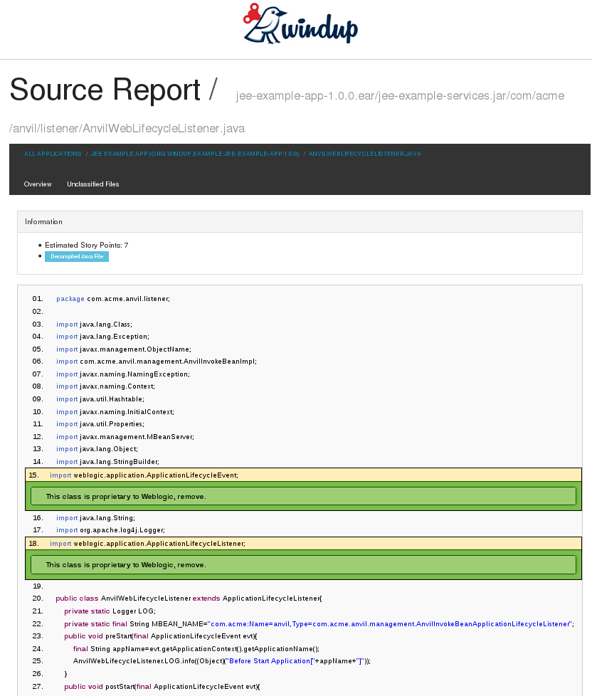

Overview
This guide is for engineers, consultants, and others who plan to use Windup 2.0 to migrate Java applications or other components.
What is Windup?

JBoss Windup is a rule-based tool to simplify application migrations.
Running from a Forge environment, the tool examines EAR, WAR, and JAR deployments (or a project source directory) and produces an HTML report detailing the inner workings of the Java application to simplify migration efforts. It seeks to make migrating from other containers to JBoss EAP a piece of cake.
Windup 2.0 vs. Windup 0.7.x
Windup 2.0 aims to deliver the same functionality as legacy Windup, however, the internal architecture and rule structure is very different and allows for the creation of much more complex rules.
How Does Windup Simplify Migration?
Windup looks for common resources and highlight technologies and known “trouble spots” in migrating applications. The goal of Windup is to provide a high level view into relevant technologies in use within the application, and provide a consumable report for organizations to estimate, document, and migrate enterprise applications to Java EE and JBoss EAP.
These are some of the of the areas targetted by current core Windup rulesets:
| Ruleset | Description |
|---|---|
Java code |
Reads compiled Java files, determines if blacklisted classes are imported, and if so, continues to profile the resource. |
JSP code |
Reads JSP files, extracts the JSP imports and taglibs, and continues to profile the resource |
XML configuration |
Reads XML files into a DOM objects and continues to profile the resource. |
Follow Windup on Twitter!
Follow Windup on Twitter @JBossWindup for updates and more!
Features of Windup 2.0
| Shared Data Model |
Windup 2.0 creates a shared data model graph that provides the following benefits.
|
| Extensibility |
Windup 2.0 can be extended by developers, users, and 3rd-parties.
|
| Better Rules |
Windup 2.0 provides more powerful and complex rules.
|
| Automation |
Windup 2.0 has the ability to automate some of the migration processes.
|
| Work Estimation |
Estimates for the level of effort is based on the skills required and the classification of migration work needed.
|
| Better Reporting |
Windup 2.0 reports are now targeted for specific audiences.
|
Windup Processing Overview
Windup is a rule-based migration tool that allows you to write customized rules to analyze the APIs, technologies, and architectures used by the applications you plan to migrate. The Windup tool also executes its own core rules through all phases of the migration process.
The following is a high level conceptual overview of what happens within Windup when you execute the tool against your application or archive.
Discovery Phase
Wnen you run the windup-migrate-app command, Windup executes its own core rules to extract files from archives, decompile classes, and analyze the application. In this phase, Windup builds a datamodel, storing component data and relationships in a graph database, which can then be queried and updated as needed by the migration rules and for reporting purposes.
For more information about the graph database components, see Windup Architectural Components.
Application Migration
The next step in the process is the execution of the migration rules. In this phase, the rules typically do not execute against the application input files. Instead, they execute against the graph database model. Windup rules are independent and decoupled and they communicate with each other using the graph database model. Rules query the graph database to obtain information needed to test the rule condition. They also update the data model with information based on the result of the rule execution. This allows rules to easily interact with other rules and enables the creation of very complex rules.
The Windup distribution contains a large number of migration rules, but in some cases, you may need to create additional custom rules for your specific implementation. Windup’s architecture allows you to create Java-based rule addons or XML rules and add easily add them to Windup. Custom rule creation is covered in the Windup Rules Development Guide.
Generate Findings Based on the Rule Execution Results
The final step in the process is to pull data from the graph database model to generate of reports and optionally generate scripts. Again, Windup uses rules to generate the final output.
By default, Windup generates the following reports at the end of the application migration process. The reports are located in the reports/ subdirectory of the output report path specified when you execute Windup:
-
Application Report: This report provides a summary of the total estimated effort, or story points, that are required for the migration. It also provides a detailed list of issues and suggested changes, broken down by archive or folder.
-
RuleProvider report: This is a detailed listing of the rule providers that fired when running Windup and whether any errors occurred.
-
Additional reports are generated that provide detailed line-by-line migration tips for individual files.
Windup can also generate scripts to automate migration processes based on the findings. For example, some configuration files are easily mapped and can be automatically generated as part of the migration process.
Get Involved
How can you help?
To help us make Windup cover most application constructs and server configurations, including yours, you can help with any of the following items. Some items require only a few minutes of your time!
-
Let us know what Windup migration rules should cover.
-
Provide example applications to test migration rules.
-
Identify application components and problem areas that may be difficult to migrate.
-
Write a short description of these problem migration areas.
-
Write a brief overview describing how to solve the problem migration areas.
-
-
Try Windup on your application. Be sure to report any issues you encounter.
-
You can contribute Windup rules.
-
Write a Windup rule add-on to automate a migration process.
-
Create a test for the new rule.
-
For details, see the Windup Rules Development Guide.
-
-
You can also contribute to the project source code.
-
Create a core rule.
-
Improve performance or efficiency.
-
See the_Windup Core Development Guide_ for information about how to configure your environment and set up the project.
-
Any level of involvement is greatly appreciated!
Helpful links
-
Windup Wiki: https://github.com/windup/windup/wiki
-
Windup documentation (generated from the Wiki documentation at the link above):
-
Windup Forums: https://community.jboss.org/en/windup
-
Windup Issue Tracker: https://issues.jboss.org/browse/WINDUP
-
Windup Users Mailing List: windup-users@lists.jboss.org
-
Windup Developers Mailing List: windup-dev@lists.jboss.org
-
Windup Commits Mailing List: windup-commits@lists.jboss.org
-
Windup on Twitter: @JBossWindup
Report Issues with Windup
Windup uses JIRA as its issue tracking system. If you encounter an issue executing Windup, please file a Windup JIRA Issue.
Create a JIRA Account
If you do not yet have a JIRA account, create one using the following procedure.
-
Open a browser to the following URL: https://issues.jboss.org/secure/Dashboard.jspa
-
Click the Sign Up link in the top right side of the page.
-
Enter your email address and click the
Confirm addressbutton. -
Follow the instructions sent to your email address.
Create a JIRA Issue
-
Open a browser to the following URL: https://issues.jboss.org/secure/CreateIssue!default.jspa.
-
If you have not yet logged in, click the Log In link at the top right side of the page.
-
Enter your credentials and click the
LOGINbutton. -
You are then redirected back to the Create Issue page.
-
-
Choose the following options and click the
Nextbutton.-
Project: Windup
-
Issue Type: Bug
-
-
On the next screen complete the following fields:
-
Summary: Enter a brief description of the problem or issue.
-
Environment: Provide the details of your operating system, version of Java, and any other pertinent information.
-
Description: Provide a detailed description of the issue. Be sure to include logs and exceptions traces.
-
-
Click the
Createbutton to create the JIRA issue. -
If the application or archive causing the issue does not contain sensitive information and you are comfortable sharing it with the Windup development team, attach it to the issue by choosing
More → Attach Files. You are provided with an option to restrict visibility to JBoss employees.
About the WINDUP_HOME Variable
This documentation uses the WINDUP_HOME replaceable value to denote the path to the Windup distribution. When you encounter this value in the documentation, be sure to replace it with the actual path to your Windup installation.
-
If you download and install the latest distribution of Windup from the JBoss Nexus repository,
WINDUP_HOMErefers to thewindup-distribution-2.0.0.VERSIONfolder extracted from the downloaded ZIP file. -
If you build Windup from GitHub source,
WINDUP_HOMErefers to thewindup-distribution-2.0.0-VERSIONfolder extracted from the Windup sourcedist/target/windup-distribution-2.0.0-VERSION.zipfile.
Run Windup
Install Windup
-
Download the latest Windup ZIP distribution.
-
Extract the ZIP file in to a directory of your choice.
|
Note
|
If you used previous versions of Windup, delete the ${user.home}/.windup/ directory. Otherwise you may see errors like the following when you execute Windup:
Command: windup-migrate-app was not found
|
Execute Windup
Prerequisites
Before you begin, you must gather the following information.
-
Windup requires that you specify the fully qualified path of the application archive or folder you plan to migrate. This is passed using the
--inputargument on the command line. -
You also specify the fully qualified path to a folder that will contain the resulting report information. This path is passed using the
--outputargument on the command line.-
If the folder does not exist, it is created by Windup.
-
If the folder exists, you are prompted with the message:
Overwrite all contents of <OUTPUT_DIRECTORY> (anything already in the directory will be deleted)? [y/N]
Choose "y" if you want Windup to delete and recreate the directory.
-
If you are confident you want to overwrite the output directory, you can specify
--overwriteon the command line to automatically delete and recreate the directory.NoteBe careful not to specify a directory that contains important information!
-
-
You must also provide a list of the application packages to be evaluated.
-
In most cases, you are interested only in evaluating the custom application class packages and not the standard Java EE or 3rd party packages. For example, if the MyCustomApp application uses the package
com.mycustomapp, you provide that package using the--packagesargument on the command line. It is not necessary to provide the standard Java EE packages, likejava.utilorjavax.ejb. -
While you can provide package names for standard Java EE 3rd party software like
org.apache, it is usually best not to include them as they should not impact the migration effort. -
If you omit the
--packagesargument, every package in the application is scanned, resulting in very slow performance. It is best to provide the argument with one or more packages.
-
Start Windup
For information about the use of WINDUP_HOME in the instructions below, see About the WINDUP_HOME Variable.
-
Open a terminal and navigate to the
WINDUP_HOME/bindirectory -
Type the following command to start Windup:
For Linux: WINDUP_HOME/bin $ ./windup For Windows: C:\WINDUP_HOME\bin> windup
-
You are presented with the following prompt.
Using Windup at WINDUP_HOME _ ___ __ | | / (_)___ ____/ /_ ______ | | /| / / / __ \/ __ / / / / __ \ | |/ |/ / / / / / /_/ / /_/ / /_/ / |__/|__/_/_/ /_/\__,_/\__,_/ .___/ /_/ JBoss Windup, version [ 2.0.0-VERSION ] - JBoss, by Red Hat, Inc. [ http://windup.jboss.org ] [windup-distribution-2.0.0-VERSION]$
Run the windup-migrate-app Command
-
The syntax to evaluate an application using the Windup tool requires that you specify the location of the input archive or source code folder, the location of a folder to contain the output reporting information, and the application packages to evaluate. To evaluate an application archive, use the following syntax:
windup-migrate-app --input INPUT_ARCHIVE_OR_FOLDER --output OUTPUT_REPORT_DIRECTORY --packages PACKAGE_1 PACKAGE_2 PACKAGE_N
To run Windup against application source code, you must add the
--sourceMode trueargument:windup-migrate-app --sourceMode true --input INPUT_ARCHIVE_OR_FOLDER --output OUTPUT_REPORT_DIRECTORY --packages PACKAGE_1 PACKAGE_2 PACKAGE_N
Where:
INPUT_ARCHIVE_OR_FOLDER is the fully qualified application archive or source path
OUTPUT_REPORT_DIRECTORY is the fully qualified path to the folder that will contain the the report information produced by Windup.
NoteIf the OUTPUT_REPORT_DIRECTORY directory exists, your are prompted to overwrite the contents. If you respond "y", it is deleted and recreated by Windup, so be careful not to specify an output directory that contains important information! PACKAGE_1, PACKAGE_2, PACKAGE_N are the packages to be evaluated by Windup.
See Windup Command Examples below for concrete examples of Windup commands using source code directories and archives located in the Windup GitHub repository.
-
You should see the following result upon completion of the command:
***SUCCESS*** Windup execution successful!
-
To exit Windup, type:
exit
-
Open the
OUTPUT_REPORT_DIRECTORY/index.htmlfile in a browser to access the report. The following subdirectories in theOUTPUT_REPORT_DIRECTORYcontain the supporting information for the report:OUTPUT_REPORT_DIRECTORY/ graph/ renderedGraph/ reports/ stats/ index.html -
For details on how to evaluate the report data, see Review the Report.
Run Windup in Batch Mode
Windup can be also executed in batch mode within a shell or batch script using the --evaluate argument as follows.
-
Open a terminal and navigate to the WINDUP_HOME directory.
-
Type the following command to run Windup in batch mode:
For Linux: $ bin/windup --evaluate "windup-migrate-app --input INPUT_ARCHIVE --output OUTPUT_REPORT --packages PACKAGE_1 PACKAGE_2 PACKAGE_N" For Windows: > bin\windup.bat --evaluate "windup-migrate-app --input INPUT_ARCHIVE --output OUTPUT_REPORT --packages PACKAGE_1 PACKAGE_2 PACKAGE_N"
Windup Help
To see the list of available parameters for the windup-migrate-app command, execute the following command in the Windup prompt:
man windup-migrate-app
Windup Command Examples
The following Windup command examples report against applications located in the Windup source test-files directory.
Source Code Example
The following command runs against the seam-booking-5.2 application source code. It evaluates all org.jboss.seam packages and creates a folder named 'seam-booking-report' in the /home/username/windup-reports/ directory to contain the reporting output.
windup-migrate-app --sourceMode true --input /home/username/windup-source/test-files/seam-booking-5.2/ --output /home/username/windup-reports/seam-booking-report --packages org.jboss.seam
Archive Example
The following command runs against the jee-example-app-1.0.0.ear EAR archive. It evaluates all com.acme and org.apache packages and creates a folder named 'jee-example-app-1.0.0.ear-report' in the /home/username/windup-reports/ directory to contain the reporting output.
windup-migrate-app --input /home/username/windup-source/test-files/jee-example-app-1.0.0.ear/ --output /home/username/windup-reports/jee-example-app-1.0.0.ear-report --packages com.acme org.apache
Windup Batch Example
The following Windup batch command runs against the jee-example-app-1.0.0.ear EAR archive. It evaluates all com.acme and org.apache packages and creates a folder named 'jee-example-app-1.0.0.ear-report' in the /home/username/windup-reports/ directory to contain the reporting output.
For Linux: $ bin/windup --evaluate "windup-migrate-app --input /home/username/windup-source/test-files/jee-example-app-1.0.0.ear/ --output /home/username/windup-reports/jee-example-app-1.0.0.ear-report --packages com.acme org.apache" For Windows: > bin\windup.bat --evaluate "windup-migrate-app --input \windup-source\test-files\jee-example-app-1.0.0.ear --output \windup-reports\jee-example-app-1.0.0.ear-report --packages com.acme org.apache
Windup Quickstart Examples
For more concrete examples, see the Windup quickstarts located on GitHub here: https://github.com/windup/windup-quickstarts. If you prefer, you can download the 2.0.0.Alpha1 release ZIP or TAR distribution of the quickstarts.
The quickstarts provide examples of Java-based and XML-based rule addons you can run and test using Windup. The README instructions provide a step-by-step guide to run the quickstart example. You can also look through the code examples and use them as a starting point for creating your own rule addons.
Review the Report
About the Report
When you execute Windup, the report is generated in the OUTPUT_REPORT_DIRECTORY you specify for the --output argument in the command line. This output directory contains the following files and subdirectories:
-
index.html: This is the landing page for the report. -
archives/: Contains the archives extracted from the application -
graph/: Contains binary graph database files -
reports/: This directory contains the generated HTML report files -
stats/: Contains Windup performance statistics
The examples below use the test-files/jee-example-app-1.0.0.ear located in the Windup GitHub source repository for input and specify the com.acme and org.apache package name prefixes to scan. For example:
windup-migrate-app --input /home/username/windup-source/test-files/jee-example-app-1.0.0.ear/ --output /home/username/windup-reports/jee-example-app-1.0.0.ear-report --packages com.acme org.apache
Open the Report
Use your favorite browser to open the index.html file located in the output report directory. You should see something like the following:

Click on the link under the Name column to view the Windup application report page.
Report Sections
Application Report Page
The first section of the application report page summarizes the migration effort. It provides the total Story Points and a graphically displays the effort by technology. A Story Point is a term commonly used in Scrum Agile software development methodology to estimate the level of effort needed to implement a feature or change. It does not necessarily translate to man-hours, but the value should be consistent across tasks.
-
The migration of the JEE Example App EAR is assigned a total of 42 story points. A pie chart shows the breakdown of story points by package.
-
This is followed by a section for each of the archives contained in the EAR. It provides the total of the story points assigned to the archive and lists the files contained in archive along with the warnings and story point assigned to each file.
The following is an example of a Windup Application Report.

Archive Analysis Sections
Each archive summary begins with a total of the story points assigned to its migration, followed by a table detailing the changes required for each file in the archive. The report contains the following columns.
- Name
-
The name of the file being analyzed
- Technology
-
The type of file being analyzed. For example:
-
Java Source
-
Decompiled Java File
-
Manifest
-
Properties
-
EJB XML
-
Spring XML
-
Web XML
-
Hibernate Cfg
-
Hibernate Mapping
-
- Issues
-
Warnings about areas of code that need review or changes.
- Estimated Story Points
-
Level of effort required for migrating the file.
The following is an example of the archive analysis summary section of a Windup Report. In this example, it’s the analysis of the WINDUP_SOURCE/test-files/jee-example-app-1.0.0.ear/jee-example-services.jar.

File Analysis Pages
The analysis of the jee-example-services.jar lists the files in the JAR and the warnings and story points assigned to each one. Notice the com.acme.anvil.listener.AnvilWebLifecycleListener file has 5 warnings and is assigned 7 story points. Click on the file to see the detail.
-
The Information section provides a summary of the story points and notes that the file was decompiled by Windup.
-
This is followed by the file source code listing. Warnings appear in the file at the point where migration is required.
In this example, warnings appear at the import of weblogic.application.ApplicationLifecycleEvent and report that the class is proprietary to WebLogic and must be removed.

Later in the code, warnings appear for the creation of the InitialContext and for the object name when registering and unregistering an MBeans

Additional Reports
Explore the Windup OUTPUT_REPORT_DIRECTORY/reports folder to find additional reporting information.
Rule Provider Execution Report
The OUTPUT_REPORT_DIRECTORY/reports/windup_ruleproviders.html page provides the list of rule providers that executed when running the Windup migration command against the application.

Rule Provider Execution Report
The OUTPUT_REPORT_DIRECTORY/reports/windup_ruleproviders.html page provides the list of rule providers that executed when running the Windup migration command against the application.
Individual File Analysis Reports
You can directly access the the file analysis report pages described above by browsing for them by name in the OUTPUT_REPORT_DIRECTORY/reports/ directory. Because the same common file names can exist in multiple archives, for example "manifest.mf" or "web.xml", Windup adds a unique numeric suffix to each report file name.

Additional Resources
Review the Windup Quickstarts
The Windup quickstarts provide working examples of how to create custom Java-based rule addons and XML rules. You can use them as a starting point for creating your own custom rules. The quickstarts are available on GitHub here: https://github.com/windup/windup-quickstarts
You can fork and clone the project to have access to regular updates or you can download a ZIP file of the latest version.
Download the Latest ZIP
To download the latest quickstart ZIP file, browse to: https://github.com/windup/windup-quickstarts/releases
Click on the most recent release to download the ZIP to your local file system.
Fork and Clone the GitHub Project
If you don’t have the GitHub client (git), download it from: http://git-scm.com/
-
Click the
Forklink on the Windup quickstart GitHub page to create the project in your own Git. The forked GitHub repository URL created by the fork should look like this: https://github.com/YOUR_USER_NAME/windup-quickstarts.git -
Clone your Windup quickstart repository to your local file system:
git clone https://github.com/YOUR_USER_NAME/windup-quickstarts.git
-
This creates and populates a
windup-quickstartsdirectory on your local file system. Navigate to the newly created directory, for examplecd windup-quickstarts/
-
If you want to be able to retrieve the lates code updates, add the remote
upstreamrepository so you can fetch any changes to the original forked repository.git remote add upstream https://github.com/windup/windup-quickstarts.git
-
To get the latest files from the
upstreamrepository.git reset --hard upstream/master
Known Windup Issues
Windup known issues are tracked here: Open Windup issues
Glossary of Terms Used in Windup
Rules Terms
- Rule
-
A piece of code that performs a single unit of work during the migration process. Depending on the complexity of the rule, it may or may not include configuration data. Extensive configuration information may be externalized into external configuration, for example, a custom XML file. The following is an example of a Java-based rule added to the
JDKConfigRuleProvider class.
.addRule()
.when(JavaClass.references("java.lang.ClassLoader$").at(TypeReferenceLocation.TYPE))
.perform(Classification.as("Java Classloader, must be migrated.")
.with(Link.to("Red Hat Customer Portal: How to get resources via the ClassLoader in a JavaEE application in JBoss EAP", "https://access.redhat.com/knowledge/solutions/239033"))
.withEffort(1))- RuleProvider
-
A class that implements one or more rules using the
.addRule()method. The following are examples of legacy Java RulesProviders that are defined inrules-java-eeruleset.-
EjbConfig
-
JDKConfig
-
SeamToCDI
-
- Ruleset
-
A ruleset is a group of one or more RuleProviders that targets a specific area of migration, for example,
Spring → Java EE 6orWebLogic → JBoss EAP. A ruleset is packaged as a JAR and contains additional information needed for the migration, such as operations, conditions, report templates, static files, metadata, and relationships to other rulesets. The following Windup projects are rulesets.-
rules-java-ee
-
rules-xml
-
- Rules Metadata
-
Information about whether a particular ruleset applies to a given situation. The metadata can include the source and target platform and frameworks.
- Rules Pipeline
-
A collection of rules that feed information into the knowledge graph.
Reporting Terms
- Lift and Shift (Level of effort)
-
The code or file is standards-based and can be ported to the new environment with no changes.
- Mapped (Level of effort)
-
There is a standard mapping algorithm to port the code or file to the new environment.
- Custom (Level of effort)
-
The code or file must be rewritten or modified to work in the new environment.
- Story Point
-
A term commonly used in Scrum Agile software development methodology to estimate the level of effort needed to implement a feature or change. It does not necessarily translate to man-hours, but the value should be consistent across tasks.
Windup Architectural Components
The following open source software, tools, and APIs are used within Windup to analyze and provide migration information. If you plan to contribute source code to the core Windup 2.0 project, you should be familiar with them.
Forge
Forge is an open source, extendable, rapid application development tool for creating Java EE applications using Maven. For more information about Forge 2, see: JBoss Forge.
Forge Furnace
Forge Furnace is a modular runtime container behind Forge that provides the ability to run Forge addons in an embedded application. For more information about Forge Furnace, see: Run Forge Embedded.
TinkerPop
TinkerPop is an open source graph computing framework. For more information, see: TinkerPop.
Titan
Titan is a scalable graph database optimized for storing and querying graphs. For more information, see: Titan Distributed Graph Database and Titan Beginner’s Guide.
Frames
Frames represents graph data in the form of interrelated Java Objects or a collection of annotated Java Interfaces. For more information, see: TinkerPop Frames.
Windup includes several Frames extensions, which are documented here: Frames Extensions.
Gremlin
Gremlin is a graph traversal language that allows you to query, analyze, and manipulate property graphs that implement the Blueprints property graph data model. For more information, see: TinkerPop Gremlin Wiki.
Blueprints
Blueprints is an industry standard API used to access graph databases. For more information about Blueprints, see: TinkerPop Blueprints Wiki.
Pipes
Pipes is a dataflow framework used to process graph data. It for the transformation of data from input to output. For more information, see: Tinkerpop Pipes Wiki.
Rexster
Rexster is a graph server that exposes any Blueprints graph through HTTP/REST and a binary protocol called RexPro. Rexster makes extensive use of Blueprints, Pipes, and Gremlin. For more information, see: TinkerPop Rexster Wiki.
OCPsoft Rewrite
OCPsoft Rewrite is an open source routing and URL rewriting solution for Servlets, Java Web Frameworks, and Java EE. For more information about Ocpsoft Rewrite, see: OCPsoft Rewrite.